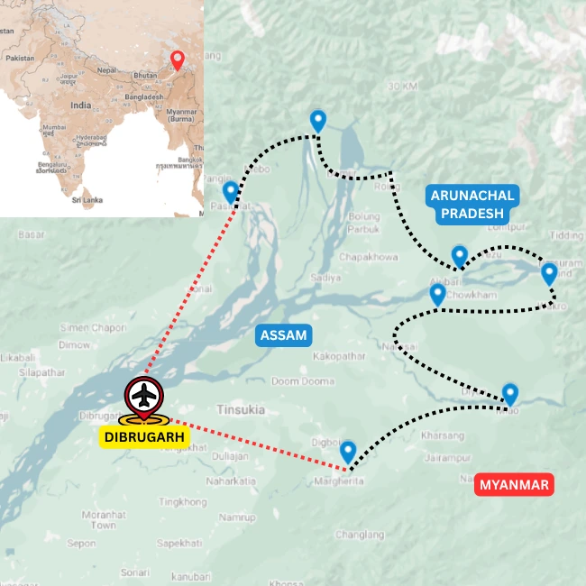

Tours
Cycling · Eastern Arunachal Pradesh
Watershed of the Brahmaputra
Cycling in Eastern Arunachal Pradesh
Overview
Cycle into the headwaters and forested valleys of India's far east
This cycling journey explores eastern Arunachal Pradesh, where great rivers descend from the mountains to strengthen the vast Brahmaputra river system. It is a dramatic land of forested foothills, remote valleys and powerful waterways, shaped by the traditions of Theravada Buddhist and Animist tribal communities.
The route links the historic tea country of eastern Assam with the quieter landscapes of Arunachal Pradesh, passing through small towns, traditional villages and long stretches of peaceful road. Riders experience an ever-changing landscape of tea gardens, bamboo forests, river crossings and deep-green Himalayan foothills.
Designed for cyclists who enjoy quiet roads and meaningful cultural encounters, this journey combines rewarding riding with an immersive exploration of one of Northeast India’s most remote and culturally diverse regions.
Ride Details
Route character

Journey Flow
The tour in sections
This is an indicative flow. The final route is shaped around your dates, pace, group profile and local conditions.
Upper Assam
Begin in the tea country and river plains of Upper Assam, where the Brahmaputra Valley starts feeling wilder and more frontier-like. The ride eases you into quiet backroads, old settlements, tea estates and the history of one of Assam's oldest cultural landscapes.
Plains of the Lohit
Move east into the broad plains of the Lohit, where Assam opens toward Arunachal Pradesh. The roads remain mostly rolling, but the journey begins to shift in language, food, vegetation and the rhythm of village life.
Where Dibang leaves the mountains
Ride near the Dibang as it emerges from the mountains into the plains. This section brings forested edges, river crossings, small settlements and the first strong sense of the eastern Himalayan river systems that feed the Brahmaputra.
Along the Siang
Close the journey along the Siang, one of the great headwater rivers of the Brahmaputra. The riding moves through a landscape that feels lush, remote and deeply alive, with Arunachal's frontier character becoming stronger with every day.
Detailed itinerary
Ask for the full route plan and cost
The itineraries are unique, so the detailed route and cost are shared directly after understanding your dates, pace and group size.
Photo Gallery
Moments from the Watershed
Enquire
Plan Watershed of the Brahmaputra
Share a few details and we will get back to you with the best route, duration and cost options.